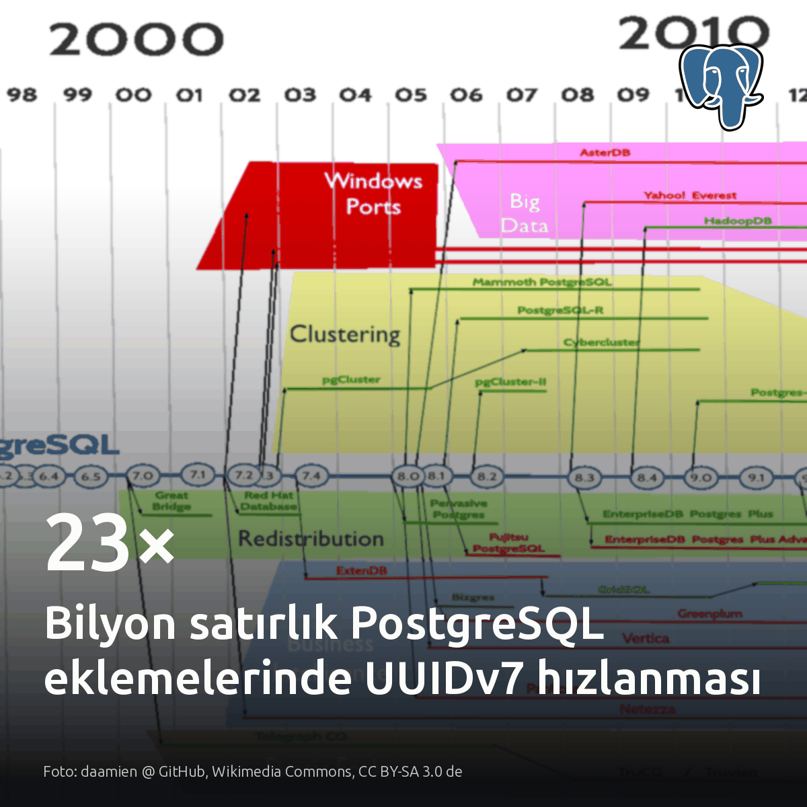
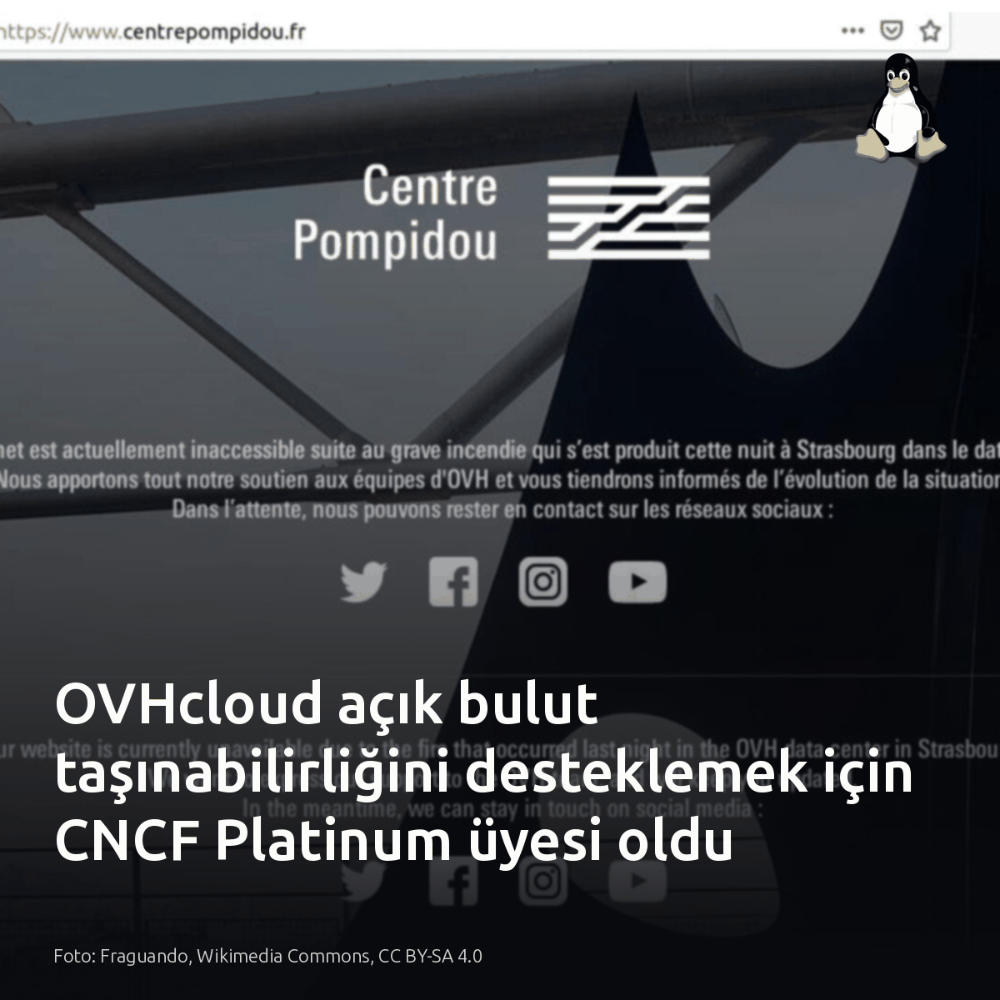
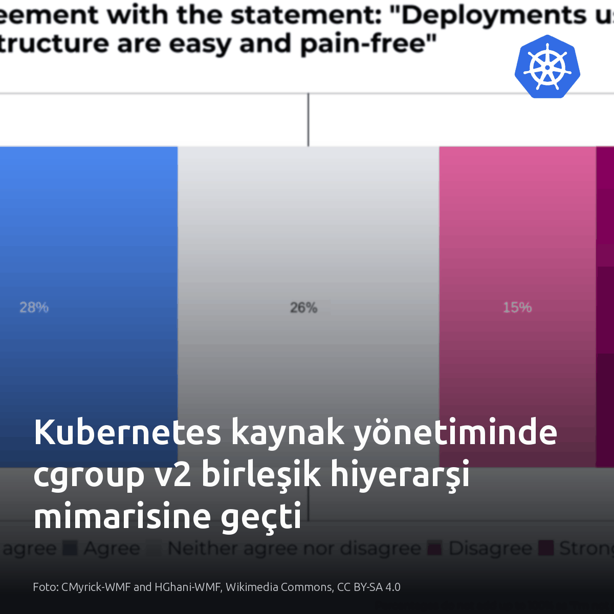
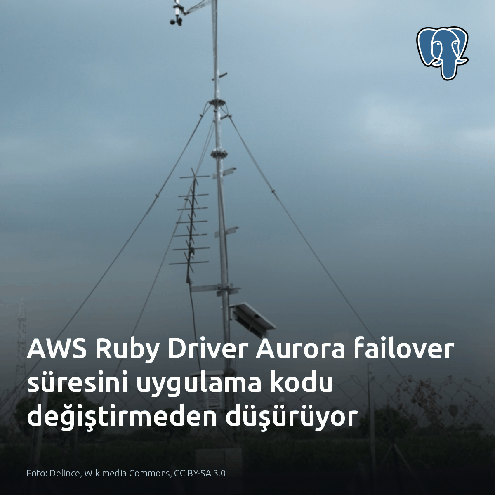
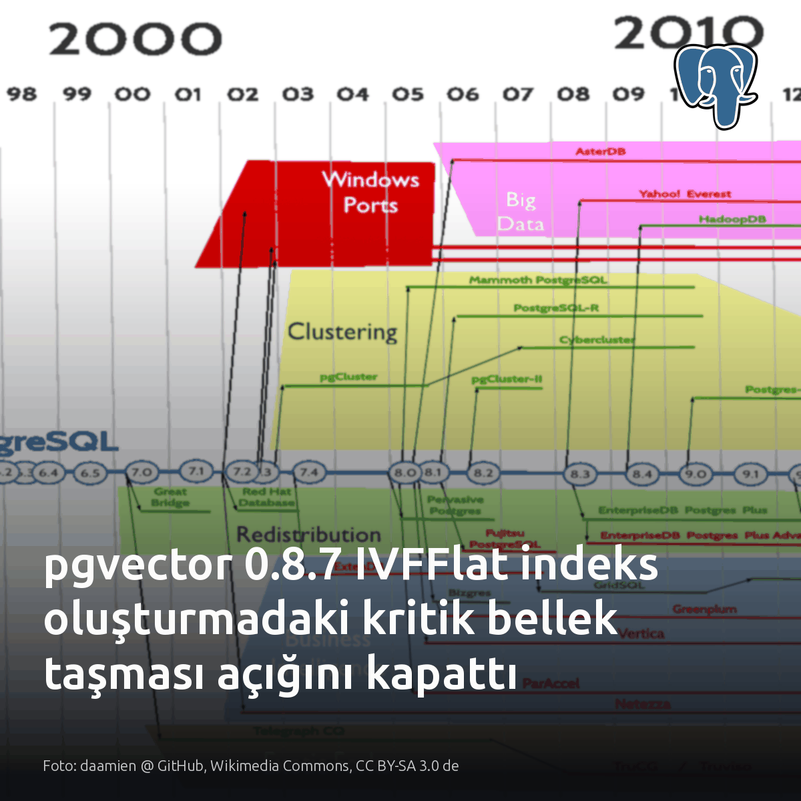

Metni kopyala, kartı indir, LinkedIn'de yapıştır. Bağlantılar gönderiye değil ilk yoruma.

Milyar satırlık PostgreSQL tablolarında UUIDv7, insert hızını 23 kata kadar artırıyor. Sebep B-tree yaprak bölünmeleri. Rastgele UUIDv4 anahtarları diske dağınık I/O yükü bindirirken, zaman sıralı yapı yeni kayıtları ardışık sayfalara yazıyor. Daha küçük indexler ve korunan önbellek, yazma darboğazını ortadan kaldırıyor. #postgresql #uuidv7 #dbaKartı indir
Kaynaklar ve test detayları: Görsel ve benchmark kaynağı: https://medium.com/@maahisoft20/stop-using-uuidv4-primary-keys-uuidv7-made-billion-row-postgresql-inserts-up-to-23-faster-baf485c5f6aa?source=rss------postgresql-5 Andrew Atkinson — PostgreSQL 18 uuidv7() mimarisi ve analizleri [S2-S6]: https://andyatkinson.com/postgresql-18-uuidv7

Bulut yerel standartlarını sadece üç hiper ölçekleyicinin yönettiği inancı 46 veri merkeziyle kırıldı. Tescilli mimari zorunluluk değil. OVHcloud, 20 bölgede Cilium üzerinde binlerce üretim Kubernetes kümesi koşturup Platinum üye olarak açık taşınabilirliği doğrudan CNCF yönetimine taşıdı. Avrupa'da egemen bulut harcamaları 12,6 milyar dolara koşarken, veri bağımsızlığı ve taşınabilirlik artık tescilli platformların lütfuna bağlı değil. #cncf #kubernetes #cloudnativeKartı indir
Kaynaklar ve görsel bilgisi: - Görsel: Fraguando, Wikimedia Commons, CC BY-SA 4.0 - CNCF duyurusu ve veriler [S2, S3, S6, S7]: https://www.cncf.io/announcements/2026/10/07/cncf-welcomes-ovhcloud-a-leading-european-cloud-provider-and-global-cloud-and-ai-player-as-a-platinum-member/

Kubernetes kaynak yönetiminde cgroup v1 devri kapandı; cgroup v2 tek hiyerarşiye geçti. Eski yapıda bellek ve blok giriş-çıkış denetleyicileri bağımsız çalıştığından, yoğun yazma baskısındaki bir veritabanı sayfa önbelleğini temizleyemeden aniden OOM katili tarafından öldürülüyordu. Birleşik süreç ağacı bu işletimsel kör noktayı kapatıyor. Sistemdeki her süreç tek bir cgroup yapısına bağlanır. Üst gruba 128Mi bellek ayrıldığında, alt süreçlerin toplam kullanımı bu 128Mi tavanını aşamaz. Pod manifestindeki kaynak sınırları doğrudan bu uç dosyalara yansıtılır. Disk yazımı ile sayfa önbelleği temizliği aynı hiyerarşide eşitlendiğinden, ağır yük altındaki veritabanı düğümleri artık kör OOM kesintilerine uğramaz. #kubernetes #cgroupv2 #linuxKartı indir
Kaynaklar ve detaylı okuma listesi: - Kubernetes cgroup v2 duyurusu: https://kubernetes.io/blog/2026/10/06/kubernetes-cgroups-v2-shift/ - Linux Kernel cgroup v2 dokümantasyonu: https://www.kernel.org/doc/html/latest/admin-guide/cgroup-v2.html - Martin Heinz cgroups rehberi: https://martinheinz.dev/blog/91 - Görsel: CMyrick-WMF and HGhani-WMF, Wikimedia Commons, CC BY-SA 4.0

Aurora PostgreSQL failover kesintisini düşürmek için uygulama koduna dokunmak gerekmiyor. Fark topoloji farkındalığında. Standart pg sürücüsü failover anında TCP zaman aşımına takılırken, AWS Advanced Ruby Driver küme durumunu doğrudan izleyip yeni yazıcıya bağlanıyor. ActiveRecord adaptörü bu geçişi kod değiştirmeden sağlıyor. Bağımsız sunucularda standart sürücü yeterli; Aurora kümelerinde ise topoloji farkındalıklı sürücü seçilmeli. Ruby servislerinde failover anındaki bağlantı zaman aşımı sürelerine bakın. #postgresql #aurora #rubyKartı indir
Kaynaklar ve detaylar: - AWS Advanced Ruby Driver Wrapper GA duyurusu: https://aws.amazon.com/about-aws/whats-new/2026/10/aws-ruby-driver-wrapper-available/ - Görsel kaynağı: Delince, Wikimedia Commons, CC BY-SA 3.0

pgvector 0.8.7 öncesi IVFFlat indeksi kurabilen bir kullanıcı sunucuda rastgele kod çalıştırabiliyor. 0.8.6 dahil önceki tüm sürümler bu sınır dışı bellek yazımından etkileniyor. Paket güncellemesi tek başına yetersiz. Düzeltme paylaşımlı kütüphanede yer aldığından, eski kodu yüklemiş arka plan süreçleri kapatılana kadar oturumlar savunmasız kalıyor. Bu nedenle ikili dosyaları güncelledikten sonra aktif bağlantıları da sonlandırmak gerekiyor. Kullanıcılara indeks yetkisi verilmeyen veya yalnızca HNSW kullanılan kümelerde bu açık işlemiyor. #postgresql #pgvector #databasesecurityKartı indir
Kaynaklar ve detaylar: - Görsel kaynağı: daamien @ GitHub, Wikimedia Commons (CC BY-SA 3.0 de) - PostgreSQL duyurusu (0.8.7 sürümü ve CVE-2026-103484): https://www.postgresql.org/about/news/pgvector-087-released-3392/ - Christophe Pettus / The Build analizi: https://postgr.es/p/9x0